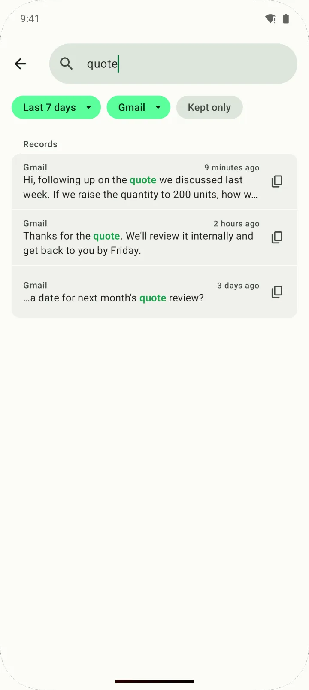
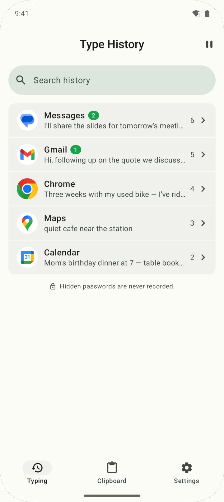
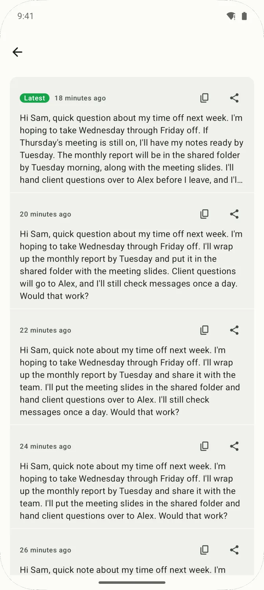
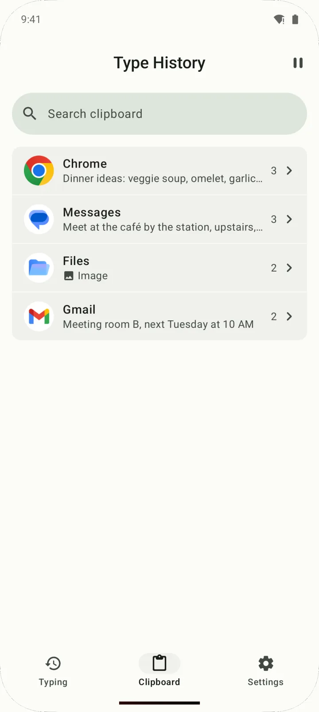
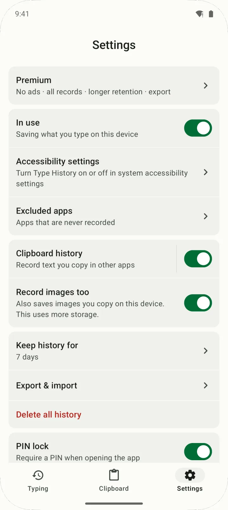

Find it by app, copy it back
Your typing history is grouped by app, and you can search by word, date or app. Edit what you find, then copy or share it.

Type History is an Android app that automatically keeps what you type in other apps — and, if you turn it on, what you copy — on your device, so you can find and copy back text lost to a crash or a failed send.
It's free with ads; a one-time lifetime purchase (US$19.99, not a subscription) removes ads and lets you keep records for up to a year.
Get it on Google Play
Type History saves what you type in other apps, right on your phone. When a message, email or comment disappears, find it and copy it back.
There's no Save button. Type History keeps recording on your device while you type in other apps, and you keep using the keyboard you already have.
Records live in a database on your device and are never uploaded or synced. Anything older than your retention period is deleted automatically (7 days by default).
Your typing history is grouped by app, and you can search by word, date or app. Edit what you find, then copy or share it.

When you rewrite the same text, the old versions stay. Pick an earlier wording from version history and copy it.

Turn on clipboard history in Settings and the text you copy in other apps gets its own tab. It's off by default, and you can include copied images too.

Lock the app with a PIN, fingerprint or face. Pick apps that are never recorded, or flip the "In use" switch off to turn the accessibility service off and stop recording.

| Free | Premium (lifetime) | |
|---|---|---|
| Typing history, clipboard history, search, editing | ✓ | ✓ |
| Retention | 1, 3 or 7 days | 1 day to 1 year (adds 30, 90 and 180 days and 1 year) |
| Records you can open per app | Latest 10 (older ones are locked, not deleted) | All |
| Clipboard history kept for | 7 days after copying | Your retention setting |
| Keep forever (skip auto-delete) | — | ✓ |
| Export & import to a file | — | ✓ |
| Ads | Yes | No |
| Price | Free | US$19.99 once (US$9.99 for 7 days after first launch) |
Not a subscription. Pay once, keep it, and restore your purchase from inside the app. Prices shown are US prices; Google Play shows your local currency.
| Type History | Keyboard's built-in clipboard & undo | Clipboard manager apps | Writing in a notes app first | |
|---|---|---|---|---|
| Saves what you type in other apps automatically | Yes, while the accessibility service is on | Usually only what you copy | Only what you copy | Only what you write there |
| Works with your current keyboard | Yes | Only with that keyboard | Usually | Yes |
| Catches every copy | Optional, and some copies are missed | While you use that keyboard | That's the main job | — |
| Earlier versions of a draft | Yes, version history | Usually not | Usually not | Only what you saved yourself |
| Extra permission | Accessibility service | Just set it as your keyboard | Varies by app | None |
| Sync across devices | No (on-device only) | Varies by keyboard | Varies by app | Varies by app |
Category columns describe typical behavior; individual apps vary.
Yes, if you typed it after turning Type History on. Open Type History, tap the app in your typing history or search for it, then copy the text and paste it back. If you rewrote it, you can also pick an earlier version from version history.
No. Type History only saves what you type while its accessibility service is on, so anything from before isn't there.
Typing history, clipboard history, search and editing are all free. The free version keeps records for up to 7 days, shows the latest 10 per app, and keeps clipboard history for 7 days after copying. It shows ads.
It's a one-time lifetime purchase, not a subscription: US$19.99. For the first 7 days after you first open the app, a welcome offer brings it to US$9.99. Premium removes ads, lifts the 10-per-app limit, and adds up to 1 year of retention, Keep forever, and export & import.
No. Your typing history is stored only in a database on your device and is never uploaded or synced. The network is used only to show ads, confirm purchases with Google Play, send anonymous usage statistics and crash reports, and open the privacy policy page — your history isn't part of that traffic. There's no account or sign-in.
Yes — saving and recovering text works without an internet connection. Ads, usage statistics and purchase checks do use the internet.
To save typing across apps without replacing your keyboard, Type History has to read the text in input fields through Android's accessibility service. The app explains what it reads and asks for your consent before you turn it on, and you can turn it off in Android Settings at any time. It doesn't ask for contacts, photos, location, microphone or camera access.
Hidden password fields are skipped. A password you type with it visible, or copy from a notes app, may be saved — add apps like that to Excluded apps.
No. Type History keeps only what you type on this device and, if you turn it on, what you copy. It doesn't collect other people's messages or recover deleted ones.
Clipboard history saves a copy only when it notices a Copy button tap or a "Copied" message, so some copies are missed. Since Android 10, apps can't freely read the clipboard in the background. You may also see a system notice like "Type History pasted from your clipboard" when a copy is saved.
Only with Premium's export, since there's no cloud backup or sync. Export your history to a file (JSON) and import it on the new phone. The file isn't encrypted, so keep it somewhere safe.
No. Type History runs on Android 10 and later only; there's no iOS app.